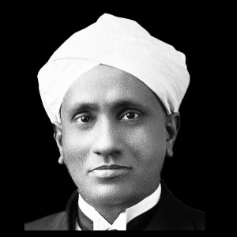

Sir Chandrasekhara Venkata Raman
Nobel Laureate in Physics (1930) - Discoverer of the Raman Effect
About C. V. Raman:
Sir C. V. Raman was an Indian physicist renowned for his groundbreaking
work in the field of light scattering. He discovered the Raman Effect,
which describes the change in the wavelength of light when it is
deflected by molecules. This discovery earned him the Nobel Prize in
Physics in 1930, making him the first Asian to receive a Nobel in any
branch of science.
Education Section
Presidency College, Madras
B.A. in Physics, 1904 (Gold Medalist)
M.A. in Physics, 1907
Major Achievements:
- Discovered the Raman Effect (1928)
- Awarded the Nobel Prize in Physics (1930)
- Founded the Raman Research Institute (1948)
- Honored with Bharat Ratna (1954)
Career Highlights:
- Assistant Accountant General, Indian Finance Departmen
- Professor of Physics, University of Calcutta
- Director, Indian Institute of Science, Bangalore
- Founder and Director, Raman Research Institute
Awards & Honors:
- Nobel Prize in Physics (1930)
- Bharat Ratna (1954)
- Lenin Peace Prize (1957)
- Fellow of the Royal Society (FRS)